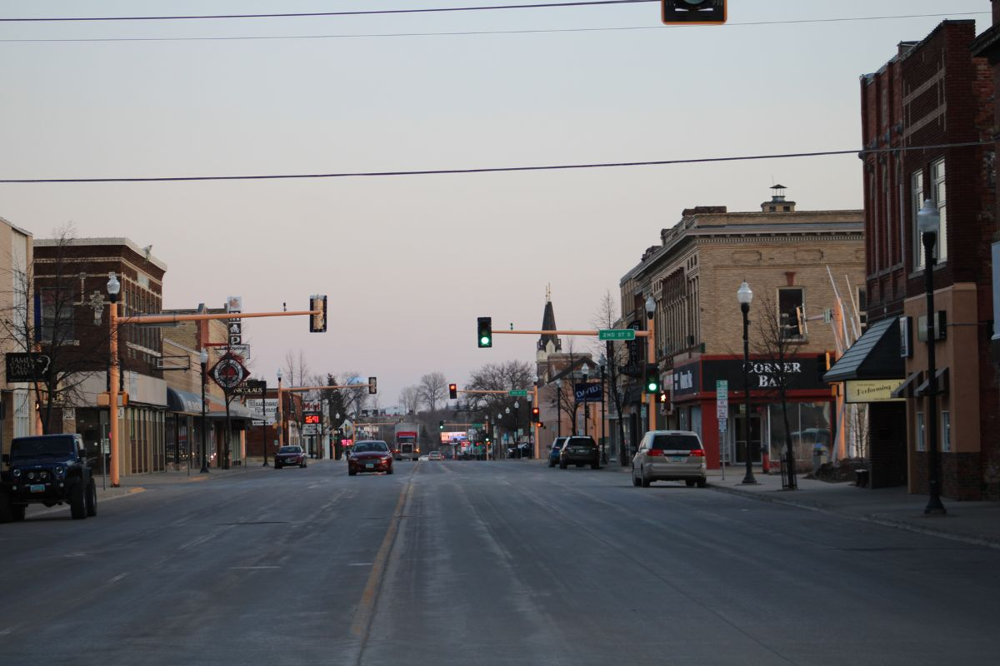
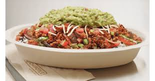

 I was born at a young age in Poway, California. Here I lived for the next 5 years of my life before moving to San Diego where I began my educational endeavors. I attended Solana Ranch Elementary school, and then went to Pacific Trails Middle School. Over the last 12 years, through my transitions through different schools, I have lived in the same house, though I will not disclose the address.
Currently, I am 15 years old and a sophomore at Canyon Crest Academy. This semester, I am taking world history, CSP, calc ab, and chemistry. Next semester, I will be taking environmental science, english, calc bc, and AP chem. I’m really enjoying the classes I’ve taken this semester and I am looking forward to my classes in the spring, especially chemistry. In my opinion, the classes I am taking this year are much more exciting than the ones I took last year as a freshman.
 My favorite restaurant is Chipotle. I usually get a burrito bowl with rice, chicken and black beans, never guacamole, since it does not add enough to the dish to justify the extra cost. I like Chipotle because it offers a wide variety of options to choose from. I also enjoy the flexibility of its options and how you get to customize your order so much. I would definitely recommend trying it out if you have never been — it is definitely a memorable experience!